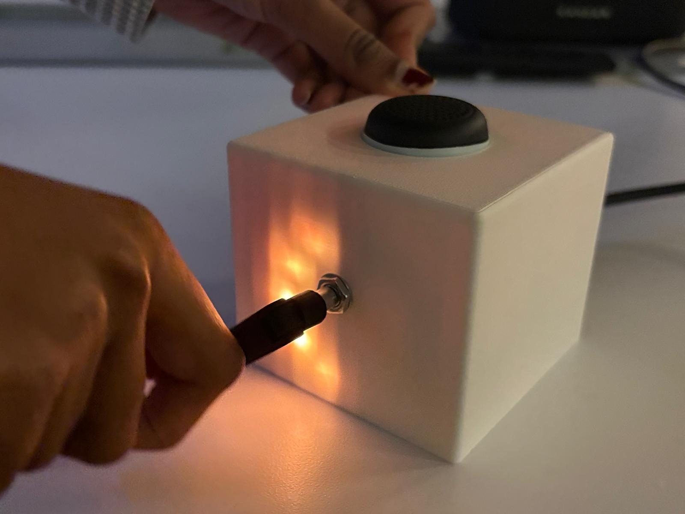
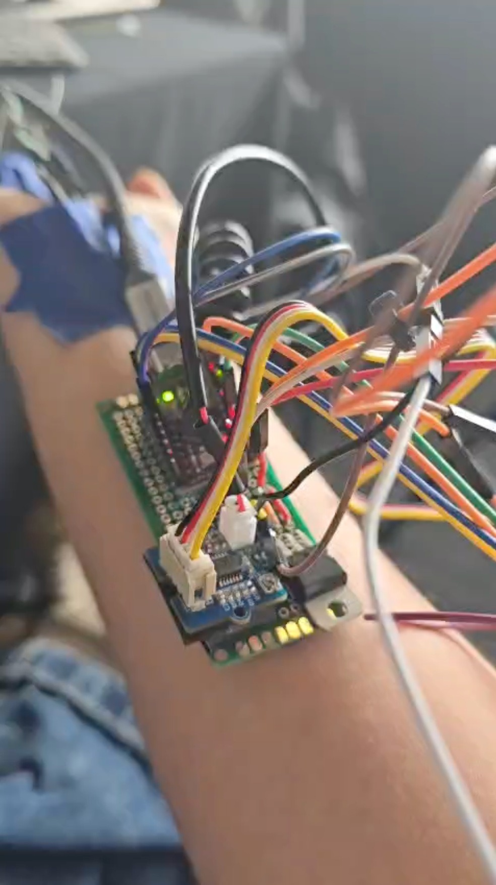
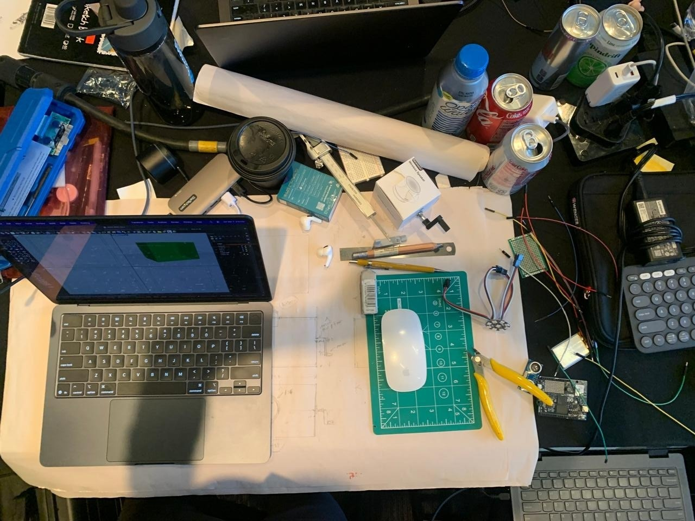
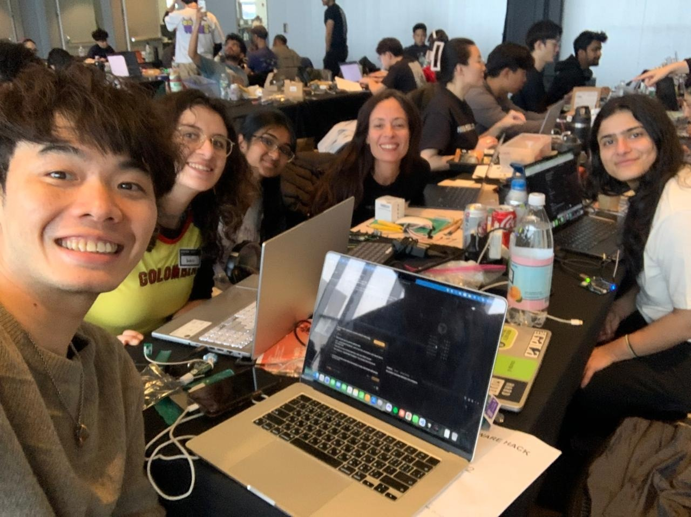

MEmento: hear what you carry
MEmento is a hand-cranked music box that turns two physiological signals, galvanic skin response and heart rate, into a short musical composition. Turn the handle and it plays; stop turning and it pauses. We built it in 48 hours at the HARD MODE Hardware × AI Hackathon at the MIT Media Lab as an answer to a question we kept returning to: what if your body’s signal data could become a ritual, not a dashboard?

- My role
- What you owned on the team, e.g. physical form and the crank mechanism, sensing hardware, or the music mapping
- Timeline
- March 6–8, 2026 (48-hour hackathon)
- Context
- HARD MODE: Hardware × AI Hackathon, hosted by the MIT Media Lab
- Team
- Shreya K, Andrea Paola Gómez Jaime, Marina Kosovski, Harvie C, and me
- Methods
- Biosignal preprocessing and feature extraction, LSTM encoder–decoder representation learning, rule-based MIDI composition, 3D-printed physical prototyping
- Devpost
- Project submission ↗
- Tools
- Arduino, GSR and heart rate sensors, Python, Jupyter, MIDI generation and audio synthesis, PLA 3D printing
- Input and output
- Input: galvanic skin response (GSR) and heart rate (HR). Output: a roughly 30-second piece generated as MIDI and synthesized to audio.
What were we trying to find out?
Can a tangible object translate a person’s physiological traces into something they would want to listen to and reflect on, rather than a number to optimize? The hackathon brief asked for hardware and AI together. We used it to test whether personal data could be made for reflection and connection instead of productivity.
Why this mattered
We are surrounded by data and systems designed to optimize us. Wearables and dashboards count steps, score sleep, and chart heart rate, and far fewer tools help us slow down, reflect, or connect with ourselves and with others through that same data.
Galvanic skin response and heart rate are both linked to emotional arousal, which made them a natural pair for this: they carry something about how a stretch of time felt, not just what the body was doing. MEmento takes those traces and gives them back as a short piece of music you have to physically crank to hear. The tagline we landed on was “hear what you carry.”
How we approached it, and why
The build was an end-to-end pipeline: biosignals in, features out, a learned representation of each signal’s dynamics over time, and finally a composition engine that turns those representations into notes. We treated physiology as a story over time rather than a set of independent readings, which is why the sequence model sits at the center of the pipeline.
| Method | Why this method | What it gave us |
|---|---|---|
| Biosensing and preprocessing | Raw GSR and HR live on different scales and are noisy. Cleaning and normalizing both to a 0–1 range made them comparable, and a sliding window (20 samples) let small changes register without swamping the signal. | A sequence of 4D feature vectors over time: mean, standard deviation, slope, and peaks. |
| LSTM encoder–decoder | We wanted a representation of how each signal moved over time (stability vs. variability), not a snapshot. Training the decoder to reconstruct the signal forced the encoder to learn a meaningful latent vector. | Two trained models, one per signal, and latent values we could use as musical control signals: GSR shaping melody, HR shaping tempo and rhythm. |
| Rule-based MIDI composition | Physiology had to modulate the music without breaking it. Pitch steps stay within a C-major scale for smoothness while the body shapes pitch, velocity, and timing on top of that structure. | A roughly 30-second timeline of about 128 notes in phrases, with two instruments chosen automatically from the full MIDI set based on combined physiological state, written to MIDI tracks and synthesized to audio. |
| 3D-printed physical prototyping | The interaction had to be legible in one gesture. A hand crank gives the object a single, familiar affordance: turn to play, stop to pause. | A PLA-printed music box housing the electronics, speaker, and a hand-cranked mechanism. |
What we actually did
-
Sensing the body
Signal capture and cleaningWe wired GSR and heart rate sensors to an Arduino and read both signals from the wrist and fingers. The first work was unglamorous: cleaning the streams, normalizing them so they could be compared, and syncing them so a small bodily change could shape the music without breaking it.
-
Learning the shape of a signal
Feature extraction and the LSTMA sliding window turned each stream into features (mean, standard deviation, slope, peaks). We then trained two LSTM encoder–decoders, one for GSR and one for heart rate, so each encoder compressed its feature sequence into a latent vector that captured the signal’s dynamics. Reconstruction error was the training signal; the latent values became our musical controls.
-
Turning features into notes
Composition engineThe generator picks two instruments from the full MIDI set (0–127) based on the combined physiological state, then builds a timeline of phrases. GSR shapes melody; heart rate influences note duration and rhythmic density. Keeping pitch steps inside a C-major scale was the decision that made the output listenable rather than a noisy sonification.
-
Building the box
Physical formWe designed and printed a PLA enclosure with a speaker on top, a crank on the side, and a warm light inside, and connected the crank so that turning plays the piece and stopping pauses it. The form was deliberately plain: a small object you hold and turn, with nothing on it that looks like a dashboard.


What we learned
The translation layer is everything
Preprocessing, feature design, and the musical mapping determine whether the output feels like you or just like data. The sensors and the model mattered less to the experience than the decisions made between them.
Treat physiology as a story over time
LSTMs shine when a signal is handled as a sequence rather than as independent moments. Stability versus variability over a window is more expressive than any single reading.
Structure makes variability legible
Constraining pitch to a scale while letting physiology modulate velocity, timing, and density gave the music enough coherence to sound intentional and enough variability to feel alive.
Our mapping is one of many
There are multiple defensible ways to translate bodily signals into musical ones, and ours produced inconsistent outputs at times. Deeper grounding in a musical framework is needed before the mapping can be called principled.
Where it landed
By the end of the weekend we had a full working pipeline, biosignals to features to LSTM latent representations to MIDI composition to audio, housed in a hand-cranked box with a single legible interaction. The concept reframes personal data as material for reflection and connection rather than optimization. The full write-up, build list, and gallery are on our Devpost submission ↗.

Looking back
What worked
Committing early to one gesture, crank to play and stop to pause, kept the hardware scope small enough to finish and gave the object a clear identity. Building the pipeline end to end, even roughly, meant we could hear the result and tune the mapping by ear.
Limitations
Forty-eight hours, sensors tested on ourselves, and a composition engine tuned by listening rather than by study. The outputs were not always consistent, and we have no evidence yet about whether listeners recognize themselves in the music.
What I’d study next
Connecting to data from wearables; a richer composition engine with stronger mappings between latent features and musical structure, possibly drawing on Terry Riley’s phrase-based framework; refining the physical form and embodied interaction; and exploring sharing, where people exchange “musical traces” with each other.